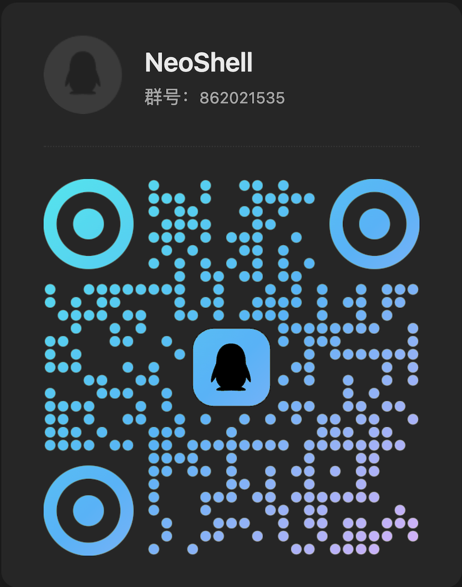

NeoShell is a native SSH manager built entirely in Rust. Encrypted vault, real-time monitoring, multi-tab terminals, SFTP — all in a single 6MB binary.
A complete SSH workstation that doesn't need a JVM, an Electron runtime, or 800MB of RAM.
Full VTE emulator with 256-color, truecolor, CJK support. 10,000 lines scrollback. Cmd+1-9 tab switching.
AES-256-GCM + Argon2id. Two-layer envelope encryption. Your passwords never touch disk unencrypted.
Auto-reconnect with tmux session persistence. WiFi drops, VPN resets, laptop sleep — your session survives.
CPU, memory, all disk partitions, per-interface network, top 15 processes. Updated every 3 seconds.
Navigate remote files, upload/download with progress bars and resume. Quick-edit configs directly in the app.
macOS (ARM64 + Intel), Windows, Linux. Same native experience everywhere. No web runtime.
No Electron. No WebView. Hardware-accelerated rendering via wgpu.
Two-layer envelope encryption. Nothing leaves your device unencrypted.
Password → Argon2id (64MB, 3 passes) → KEK
KEK → AES-256-GCM → DEK → Your Data
v0.6.12 — Single binary. No installer dependencies.
Proprietary software. Contact us for enterprise licensing.
What shipped and when.
Microsoft YaHei (inconsistent family names and malformed mstmc.ttf on some Win11 installs) to Segoe UI; CJK falls back automatically via cosmic-text glyph-level fallbackshell requestRead error: transport read infinite loop on non-OpenSSH serversFailed to open channel: Session(-13) — tmux probing moved off main session; non-OpenSSH banner goes straight to RawShellcargo test algorithm_tests; missing curve25519 / ecdh / ed25519 fails the build before shippinglibssh2 algorithm self-check: OKLOG button shows last 200 KB; refresh + open-folder actionsF1, Cmd+/, or ? in status bardirect-tcpip channel_WIN32_WINNT=0x0601) compatibilityWeChat Official
Updates & Articles

QQ Group
Discussion & Support